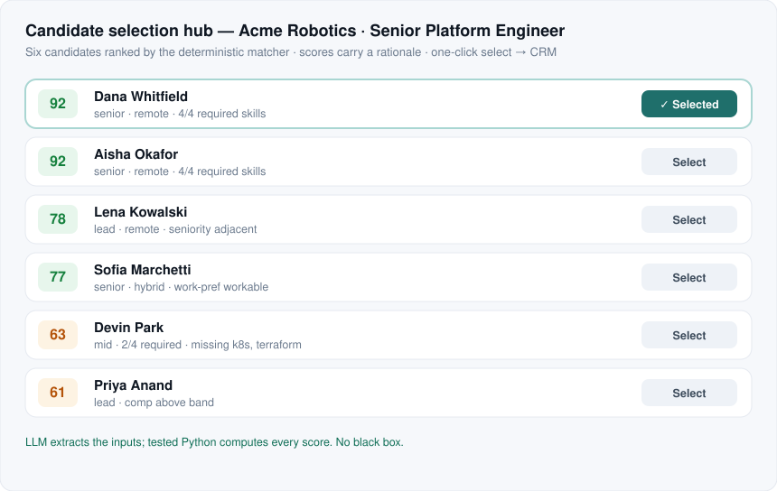

I build AI-native systems where the part that must be exact lives in tested code — not a prompt. Game rules, match scores, CRM field mappings: anything that has to be right stays deterministic and tested. The model orchestrates around it. That's how you get AI people actually trust, and use.
The verified talent layer over your ATS. The candidate owns a profile they keep true; your database self-cleans on consent. What Bullhorn + Copilot structurally can't do.
An AI recruiting desk. Intake from Slack / Teams / Claude → documented and matched → a client-facing selection hub → written to Bullhorn or Salesforce — all through one MCP server, with explainable match scores.
An AI pickleball companion in two modes. Match Mode props a phone courtside — it calibrates the court, then watches the rally and keeps score itself, calling lines out loud. Coach Mode turns a clip into one or two specific fixes. Vision detects the event; tested code keeps the score.
Anything that must be exact — a game rule, a match score, a CRM field mapping — lives in deterministic, tested code. The model reads messy input, pulls out structure, and narrates results. That's the line between a demo that drifts and a system you can trust in front of real people.
What it does, who it's for, and the one thing that must be correct. That last clause is the whole design.
A dependency-light engine + a surface + tests from day one. The engine never imports the surface.
Pin the tricky cases. If the engine is right, the product is trustworthy.
One engine answers from many places — chat tool, bot, web UI — the surface only renders what the engine computes.
Installable, containerized, CI on every push. Offline always works — no demo should need credentials.
Ship to GitHub; write the architecture + a build-vs-production spec so the gaps are owned, not hidden.
Fifteen years leading enterprise AI inside a Global Fortune 500 — a $300M+ business across 14 countries. Independently audited at 91% daily adoption in 90 days (the highest across the parent group) and $250–$300 per person, per month in gross-profit lift. Selected for Microsoft's Global AI Champions program.
Now building founder-direct: turning that operator instinct into shipped, tested, AI-native products — fast, and faster each time, because the pattern is already decided. Only the domain logic is new.

Open to founder-direct collaborations, AI-native product builds, and conversations with like-minded people on going from idea to execution — fast.